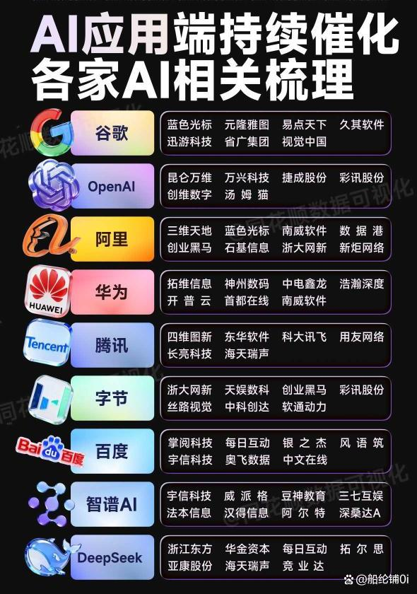

最近市场的风向，你感觉到了吗？AI板块内部正在上演一场激烈的“淘汰赛”：一边是纯讲故事的概念股冲高回落，另一边，像昆仑万维、引力传媒这样有真实产品、有订单落地的AI应用公司，却走出了独立行情，甚至频频涨停。
这背后传递的信号再清晰不过——市场的聚光灯，正从“谁的技术炫”彻底转向“谁能把技术变成钱”。AI应用的商业化落地，在2026年迎来了从“技术验证”到“规模变现”的关键转折点。今天，咱们就抛开虚的，聚焦最实际的问题：在这股变现浪潮里，哪些细分赛道跑得最快？哪些公司已经拿到了“黄金门票”？
三重引擎驱动：AI商业化的“经济账”终于算过来了
为什么是2026年？这背后是技术、市场、政策三股力量的合力推动，让做AI应用终于成为一门“算得过账”的好生意。 第一，技术成本“断崖式”下降。 去年被称为“AI推理元年”，以DeepSeek-R1为代表的新一代开源模型，将推理成本直接打到了GPT-4时代的三十分之一。这意味着，企业用AI的门槛被踏平了。同时，文本、图像、视频的多模态能力走向融合，为医疗、教育等复杂场景的应用铺平了道路。 第二，市场需求“爆发式”增长。 据天风证券研究，2025年全球企业在AI解决方案上的支出预计将达5860亿美元。其中，金融、医疗、零售电商三大行业占比超60%。在降本增效的压力下，AI工具正从企业的“可选配置”变为“生存必需品”。 第三，政策“真金白银”降低门槛。 国内外都在大力建设AI基础设施。比如，中国东莞去年就投入5000万元发放“算力券”，直接补贴中小企业租用AI算力。这类政策，让大量中小玩家也能轻松入场。 更关键的一个趋势是：AI产业链的价值重心，正从英伟达、台积电这样的底层“卖水人”，快速向上层的垂直行业应用迁移。最大的机会，属于那些既懂AI技术、又深谙行业门道的“深耕者”。

五大高潜力赛道扫描：谁在闷声发财？
基于“技术+行业”深度融合的逻辑，我们梳理出当前商业化最确定、跑得最快的五大AI应用赛道。 1\. AI+医疗：从“辅助诊断”到“全流程重塑” 这是落地最快的赛道之一。目前，全国已有超30家医院将AI深度嵌入诊疗全流程。
价值核心：提精度（腾讯觅影肺结节识别灵敏度99.2%）、提效率（CT阅片从15分钟缩至30秒）、降成本（人力成本降约40%）。
赚钱模式：一是SaaS订阅（如推想医疗按例次收费），二是\*\*“平台+保险”分成\*\*（如微脉的“CareAI”）。
重点观察
卫宁健康（300253.SZ）：院内AI龙头，知识图谱覆盖98%的疾病标准，接入500+三甲医院。其AI业务去年收入增长217%，毛利率超85%。
平安好医生（1833.HK）：AI问诊量占比达65%，通过“HMO+AI”模式打通保险与健康管理闭环，用户价值持续提升。 2\. AI+教育：个性化学习革命与普惠价值 “AI+教育”正从工具升级为教学模式重构，市场年增速预计达58%。
核心应用：个性化学习路径规划、AI生成海量习题（如好未来“MathGPT”）、VR/AR沉浸式实验（成本降90%）。
特别看点：网龙网络（0777.HK） 的“AI助教”已进入亚非拉2000所贫困地区学校，以技术普惠提升当地升学率，这种“公益+市场”的模式为其赢得了新兴市场先机。 3\. AI+制造业：工业场景的“阶梯式”渗透 制造业AI化程度不一，机会分层明显。
高成熟度：AI视觉质检，如工业富联在消费电子产线的系统，漏检率低于0.001%，效率提升20倍。
中成熟度
新兴领域：具身智能控制机器人，实现柔性生产，如埃斯顿的“AI示教系统”将编程时间从8小时缩至30分钟。
重点观察
海康威视（002415.SZ）：工业视觉龙头，AI摄像头渗透率已达35%，并构建了拥有2万+开发者的开放平台生态。
拓斯达（300607.SZ）：专注服务中小企业，提供轻量化解决方案，客户复购率高达75%。 4\. AI+金融：从智能投顾到B端赋能崛起 金融是数据的天然战场，AI已渗透至核心业务。
应用深化
机会迁移：未来焦点正从C端流量转向B端技术服务。如同花顺的“AI金融云”服务上千家中小机构，这种“技术赋能”模式带来的经常性收入，估值潜力可能更大。 5\. AI+内容创作：从生产工具到生态重构 AI正在重塑内容产业的生产链条和消费体验。
直接价值：极大提升效率（如美图AI漫画生成器效率提20倍），更关键的是改善用户体验促转化。例如，淘宝“魔镜试衣间”利用AIGC，将服装退货率从45%压降至13%，直接拉动了销售。
投资启示与风险提示：在喧嚣中寻找“确定性”
梳理下来，对于关注AI应用赛道的朋友，我们可以得出几点核心启示：
紧抓“垂直深耕者”：通用大模型是基础资源，但赚钱的“装修队”才是机会所在。重点寻找在特定行业有深厚积累、能解决实际痛点的公司。
验证商业模式：优先选择SaaS订阅、效果分成等模式清晰、已有稳定现金流的公司，远离仍停留在讲故事阶段的标的。
借力政策东风：密切关注各地“算力券”等产业扶持政策，服务于受惠中小企业的解决方案商将直接受益。 当然，高收益永远伴随高风险，必须保持清醒：
技术迭代风险
行业合规风险
估值波动风险：警惕短期资金炒作推高估值，务必审视业绩增长能否真正支撑股价。 总而言之，AI应用的黄金时代已至，但投资脉络已从“普涨狂欢”进入“精挑细选”阶段。市场的奖赏，将更集中地给予那些能在产业土壤中真正扎根、并持续结果的企业。 在你看好AI应用商业化前景的同时，最关注哪个细分赛道的投资机会？是已经跑出模式的医疗AI，还是正在爆发的工业AI？或者，你是否有自己长期观察的“隐形冠军”？欢迎在评论区分享你的真知灼见，咱们一起碰撞思路，发现更多确定性机会。
> （风险提示：本文仅供参考，不构成投资建议，投资有风险，入市需谨慎）
免责声明
本文仅为个人研究与观点分享,基于公开资料整理,不构成任何投资建议。文中涉及个股仅作研究示例,不代表推荐。股市有风险,入市需谨慎。